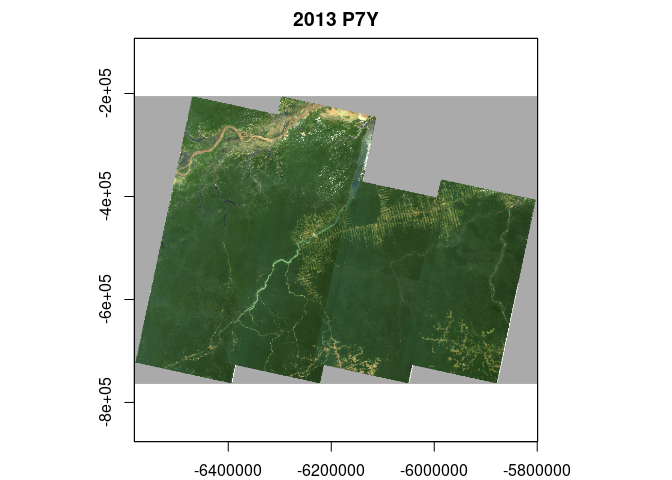
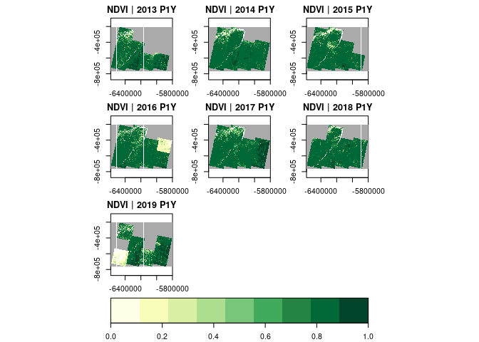
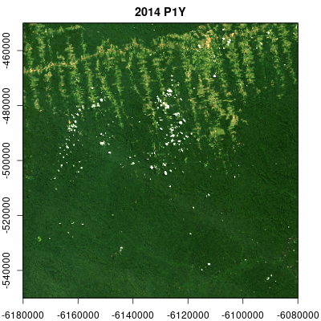
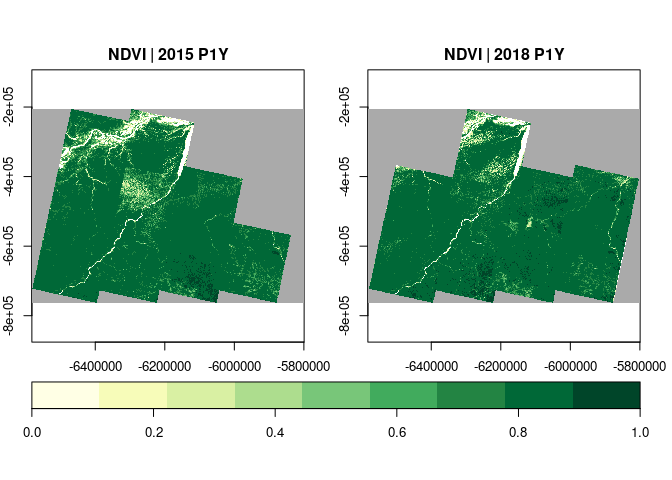
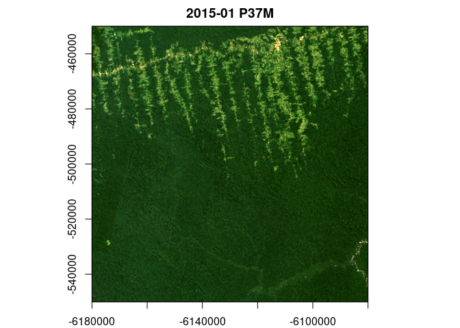
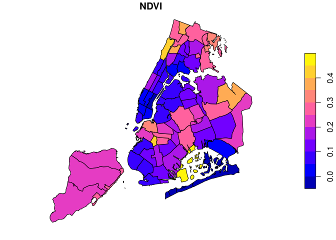

The R package gdalcubes aims at making analyses of large satellite image collections easier, faster, more intuitive, and more interactive.
The package represents the data as regular raster data cubes with dimensions bands, time, y, and x and hides complexities in the data due to different spatial resolutions,map projections, data formats, and irregular temporal sampling.
Features
- Read and process multitemporal, multispectral Earth observation image collections as regular raster data cubes by applying on-the-fly reprojection, rescaling, cropping, and resampling.
- Work with existing Earth observation imagery on local disks or cloud storage without the need to maintain a 2nd copy of the data.
- Apply user-defined R functions on data cubes.
- Execute data cube operation chains using parallel processing and lazy evaluation.
Among others, the package has been successfully used to process data from the Sentinel-2, Landsat, PlanetScope, MODIS, and Global Precipitation Measurement Earth observation satellites / missions.
Installation
Install from CRAN with:
install.packages("gdalcubes")From sources
Installation from sources is easiest with
remotes::install_git("https://github.com/appelmar/gdalcubes_R")Please make sure that the git command line client is available on your system. Otherwise, the above command might not clone the gdalcubes C++ library as a submodule under src/gdalcubes.
The package builds on the external libraries GDAL, NetCDF, SQLite, and curl.
Windows
On Windows, you will need Rtools. System libraries are automatically downloaded from rwinlib.
Linux
Please install the system libraries e.g. with the package manager of your Linux distribution. Also make sure that you are using a recent version of GDAL (>2.3.0). On Ubuntu, the following commands install all libraries.
sudo add-apt-repository ppa:ubuntugis/ppa && sudo apt-get update
sudo apt-get install libgdal-dev libnetcdf-dev libcurl4-openssl-dev libsqlite3-dev libudunits2-devMacOS
Use Homebrew to install system libraries with
brew install pkg-config
brew install gdal
brew install netcdf
brew install libgit2
brew install udunits
brew install curl
brew install sqliteGetting started
Download example data
if (!dir.exists("L8_Amazon")) {
download.file("https://uni-muenster.sciebo.de/s/e5yUZmYGX0bo4u9/download", destfile = "L8_Amazon.zip")
unzip("L8_Amazon.zip", exdir = "L8_Amazon")
}Creating an image collection
At first, we must scan all available images once, and extract some metadata such as their spatial extent and acquisition time. The resulting image collection is stored on disk, and typically consumes a few kilobytes per image. Due to the diverse structure of satellite image products, the rules how to derive the required metadata are formalized as collection_formats. The package comes with predefined formats for some Sentinel, Landsat, and MODIS products (see collection_formats() to print a list of available formats).
library(gdalcubes)
gdalcubes_options(parallel=8)
files = list.files("L8_Amazon", recursive = TRUE,
full.names = TRUE, pattern = ".tif")
length(files)## [1] 1800## [1] 1919.118
L8.col = create_image_collection(files, format = "L8_SR", out_file = "L8.db")
L8.col## Image collection object, referencing 180 images with 10 bands
## Images:
## name left top bottom
## 1 LC08_L1TP_226063_20140719_20170421_01_T1 -54.15776 -3.289862 -5.392073
## 2 LC08_L1TP_226063_20140820_20170420_01_T1 -54.16858 -3.289828 -5.392054
## 3 LC08_L1GT_226063_20160114_20170405_01_T2 -54.16317 -3.289845 -5.392064
## 4 LC08_L1TP_226063_20160724_20170322_01_T1 -54.16317 -3.289845 -5.392064
## 5 LC08_L1TP_226063_20170609_20170616_01_T1 -54.17399 -3.289810 -5.392044
## 6 LC08_L1TP_226063_20170711_20170726_01_T1 -54.15506 -3.289870 -5.392083
## right datetime srs
## 1 -52.10338 2014-07-19T00:00:00 EPSG:32622
## 2 -52.11418 2014-08-20T00:00:00 EPSG:32622
## 3 -52.10878 2016-01-14T00:00:00 EPSG:32622
## 4 -52.10878 2016-07-24T00:00:00 EPSG:32622
## 5 -52.11958 2017-06-09T00:00:00 EPSG:32622
## 6 -52.09798 2017-07-11T00:00:00 EPSG:32622
## [ omitted 174 images ]
##
## Bands:
## name offset scale unit nodata image_count
## 1 AEROSOL 0 1 180
## 2 B01 0 1 -9999.000000 180
## 3 B02 0 1 -9999.000000 180
## 4 B03 0 1 -9999.000000 180
## 5 B04 0 1 -9999.000000 180
## 6 B05 0 1 -9999.000000 180
## 7 B06 0 1 -9999.000000 180
## 8 B07 0 1 -9999.000000 180
## 9 PIXEL_QA 0 1 180
## 10 RADSAT_QA 0 1 180Creating data cubes
To create a regular raster data cube from the image collection, we define the geometry of our target cube as a data cube view, using the cube_view() function. We define a simple overview, covering the full spatiotemporal extent of the imagery at 1km x 1km pixel size where one data cube cell represents a duration of one year. The provided resampling and aggregation methods are used to spatially reproject, crop, and rescale individual images and combine pixel values from many images within one year respectively. The raster_cube() function returns a proxy object, i.e., it returns immediately without doing any expensive computations.
v.overview = cube_view(extent=L8.col, dt="P1Y", dx=1000, dy=1000, srs="EPSG:3857",
aggregation = "median", resampling = "bilinear")
raster_cube(L8.col, v.overview)## A GDAL data cube proxy object
##
## Dimensions:
## low high count pixel_size chunk_size
## t 2013 2019 7 P1Y 1
## y -764014.387686915 -205014.387686915 559 1000 256
## x -6582280.06164712 -5799280.06164712 783 1000 256
##
## Bands:
## name offset scale nodata unit
## 1 AEROSOL 0 1 NaN
## 2 B01 0 1 NaN
## 3 B02 0 1 NaN
## 4 B03 0 1 NaN
## 5 B04 0 1 NaN
## 6 B05 0 1 NaN
## 7 B06 0 1 NaN
## 8 B07 0 1 NaN
## 9 PIXEL_QA 0 1 NaN
## 10 RADSAT_QA 0 1 NaNProcessing data cubes
We can apply (and chain) operations on data cubes:
x = raster_cube(L8.col, v.overview) |>
select_bands(c("B02","B03","B04")) |>
reduce_time(c("median(B02)","median(B03)","median(B04)"))
x## A GDAL data cube proxy object
##
## Dimensions:
## low high count pixel_size chunk_size
## t 2013 2019 1 P7Y 1
## y -764014.387686915 -205014.387686915 559 1000 256
## x -6582280.06164712 -5799280.06164712 783 1000 256
##
## Bands:
## name offset scale nodata unit
## 1 B02_median 0 1 NaN
## 2 B03_median 0 1 NaN
## 3 B04_median 0 1 NaN
library(RColorBrewer)
raster_cube(L8.col, v.overview) |>
select_bands(c("B04","B05")) |>
apply_pixel(c("(B05-B04)/(B05+B04)"), names="NDVI") |>
plot(zlim=c(0,1), nbreaks=10, col=brewer.pal(9, "YlGn"), key.pos=1)
Calling data cube operations always returns proxy objects, computations are started lazily when users call e.g. plot().
Animations
Multitemporal data cubes can be animated (thanks to the gifski package):
v.subarea.yearly = cube_view(extent=list(left=-6180000, right=-6080000, bottom=-550000, top=-450000,
t0="2014-01-01", t1="2018-12-31"), dt="P1Y", dx=50, dy=50,
srs="EPSG:3857", aggregation = "median", resampling = "bilinear")
raster_cube(L8.col, v.subarea.yearly) |>
select_bands(c("B02","B03","B04")) |>
animate(rgb=3:1,fps = 2, zlim=c(100,1000), width = 400,
height = 400, save_as = "man/figures/animation.gif")
Data cube export
Data cubes can be exported as single netCDF files with write_ncdf(), or as a collection of (possibly cloud-optimized) GeoTIFF files with write_tif(), where each time slice of the cube yields one GeoTIFF file. Data cubes can also be converted to raster or starsobjects:
raster_cube(L8.col, v.overview) |>
select_bands(c("B04","B05")) |>
apply_pixel(c("(B05-B04)/(B05+B04)"), names="NDVI") |>
write_tif() |>
raster::stack() -> x
x## class : RasterStack
## dimensions : 559, 783, 437697, 7 (nrow, ncol, ncell, nlayers)
## resolution : 1000, 1000 (x, y)
## extent : -6582280, -5799280, -764014.4, -205014.4 (xmin, xmax, ymin, ymax)
## crs : +proj=merc +a=6378137 +b=6378137 +lat_ts=0 +lon_0=0 +x_0=0 +y_0=0 +k=1 +units=m +nadgrids=@null +wktext +no_defs
## names : cube_f87563007e62013, cube_f87563007e62014, cube_f87563007e62015, cube_f87563007e62016, cube_f87563007e62017, cube_f87563007e62018, cube_f87563007e62019
raster_cube(L8.col, v.overview) |>
select_bands(c("B04","B05")) |>
apply_pixel(c("(B05-B04)/(B05+B04)"), names="NDVI") |>
stars::st_as_stars() -> y
y## stars object with 3 dimensions and 1 attribute
## attribute(s), summary of first 1e+05 cells:
## Min. 1st Qu. Median Mean 3rd Qu. Max. NA's
## NDVI -0.5611802 0.4117511 0.7242106 0.5735866 0.8506824 0.8937045 79500
## dimension(s):
## from to offset delta refsys point
## x 1 783 -6582280 1000 WGS 84 / Pseudo-Mercator NA
## y 1 559 -205014 -1000 WGS 84 / Pseudo-Mercator NA
## time 1 7 NA NA POSIXct FALSE
## values x/y
## x NULL [x]
## y NULL [y]
## time [2013-01-01,2014-01-01),...,[2019-01-01,2020-01-01)To reduce the size of exported data cubes, compression and packing (conversion of doubles to smaller integer types) are supported.
If only specific time slices of a data cube are needed, select_time() can be called before plotting / exporting.
raster_cube(L8.col, v.overview) |>
select_bands(c("B04","B05")) |>
apply_pixel(c("(B05-B04)/(B05+B04)"), names="NDVI") |>
select_time(c("2015", "2018")) |>
plot(zlim=c(0,1), nbreaks=10, col=brewer.pal(9, "YlGn"), key.pos=1)
User-defined functions
Users can pass custom R functions to reduce_time() and apply_pixel(). Below, we derive a greenest pixel composite by returning RGB values from pixels with maximum NDVI for all pixel time-series.
v.subarea.monthly = cube_view(view = v.subarea.yearly, dt="P1M", dx = 100, dy = 100,
extent = list(t0="2015-01", t0="2018-12"))
raster_cube(L8.col, v.subarea.monthly) |>
select_bands(c("B02","B03","B04","B05")) |>
apply_pixel(c("(B05-B04)/(B05+B04)"), names="NDVI", keep_bands=TRUE) |>
reduce_time(names=c("B02","B03","B04"), FUN=function(x) {
if (all(is.na(x["NDVI",]))) return(rep(NA,3))
return (x[c("B02","B03","B04"), which.max(x["NDVI",])])
}) |>
plot(rgb=3:1, zlim=c(100,1000))
Extraction of pixels, time series, and summary statistics over polygons
In many cases, one is interested in extracting sets of points, time series, or summary statistics over polygons, e.g., to generate training data for machine learning models. Package version 0.6 therefore introduces the extract_geom() function, which replaces the previous implementations in query_points(), query_timeseries(), and zonal_statistics().
Below, we randomly select 100 locations and query values of single data cube cells and complete time series.
x = runif(100, v.overview$space$left, v.overview$space$right)
y = runif(100, v.overview$space$bottom, v.overview$space$top)
t = sample(as.character(2013:2019), 100, replace = TRUE)
df = sf::st_as_sf(data.frame(x = x, y = y), coords = c("x", "y"), crs = v.overview$space$srs)
# spatiotemporal points
raster_cube(L8.col, v.overview) |>
select_bands(c("B04","B05")) |>
extract_geom(df, datetime = t) |>
dplyr::sample_n(15) # print 15 random rows## FID time B04 B05
## 4 3 2013 203.2056 2963.1546
## 37 31 2019 170.1273 2675.2072
## 43 26 2018 402.6385 719.5687
## 6 20 2014 229.2544 3093.1971
## 46 6 2017 196.0493 2819.2851
## 18 30 2015 344.5302 3548.3619
## 32 7 2017 164.8848 2862.3831
## 56 53 2019 206.6380 3218.4763
## 19 14 2016 3513.2937 5083.1879
## 5 48 2013 237.5213 3187.6378
## 38 52 2017 544.1848 3240.5316
## 42 24 2017 302.1143 3508.7252
## 58 4 2019 472.7309 3086.2343
## 54 90 2019 1180.7844 3122.5377
## 8 23 2014 207.9704 2976.7716
# time series at spatial points
raster_cube(L8.col, v.overview) |>
select_bands(c("B04","B05")) |>
extract_geom(df) |>
dplyr::sample_n(15) # print 15 random rows## FID time B04 B05
## 10 31 2013 164.7253 2737.916
## 354 99 2018 308.7073 3195.364
## 191 15 2015 192.7483 3016.634
## 121 57 2016 223.3348 3085.160
## 290 80 2016 360.1308 3574.822
## 304 52 2017 544.1848 3240.532
## 160 91 2015 767.7224 3146.557
## 47 70 2013 219.5835 2813.293
## 406 84 2018 285.9596 3529.338
## 70 53 2014 213.6350 3194.660
## 220 63 2017 195.4949 3037.839
## 394 87 2017 243.8424 2862.902
## 198 79 2015 1497.1514 1015.755
## 16 72 2013 357.4343 3154.110
## 178 48 2015 288.9194 3139.869In the following, we use the example Landsat dataset (reduced resolution) from the package and compute median NDVI values within some administrative regions in New York City. The result is a data.frame containing data cube bands, feature IDs, and time as columns.
L8_files <- list.files(system.file("L8NY18", package = "gdalcubes"),
".TIF", recursive = TRUE, full.names = TRUE)
v = cube_view(srs="EPSG:32618", dy=300, dx=300, dt="P1M",
aggregation = "median", resampling = "bilinear",
extent=list(left=388941.2, right=766552.4,
bottom=4345299, top=4744931,
t0="2018-01-01", t1="2018-12-31"))
sf = sf::st_read(system.file("nycd.gpkg", package = "gdalcubes"), quiet = TRUE)
raster_cube(create_image_collection(L8_files, "L8_L1TP"), v) |>
select_bands(c("B04", "B05")) |>
apply_pixel("(B05-B04)/(B05+B04)", "NDVI") |>
extract_geom(sf, FUN = median) -> zstats
dplyr::sample_n(zstats, 15) # print 15 random rows## FID time NDVI
## 1 45 2018-10 0.007987411
## 2 61 2018-03 0.036358068
## 3 29 2018-06 0.041174279
## 4 64 2018-11 -0.012109157
## 5 61 2018-09 0.137074883
## 6 34 2018-05 0.044606108
## 7 24 2018-08 0.312288026
## 8 52 2018-05 0.064529493
## 9 56 2018-01 0.029248471
## 10 57 2018-08 0.223526462
## 11 6 2018-06 0.060700447
## 12 33 2018-05 0.185520244
## 13 30 2018-08 0.021604780
## 14 61 2018-06 0.040626044
## 15 55 2018-04 0.119639959We can combine the result with the original features by a table join on the FID column using merge():

When using input features with additional attributes / labels, the extract_geom() function hence makes it easy to create training data for machine learning models.
More Features
Cloud support with STAC: gdalcubes can be used directly on cloud computing platforms including Amazon Web Services, Google Cloud Platform, and Microsoft Azure. Imagery can be read from their open data catalogs and discovered by connecting to STAC API endpoints using the rstac package (see links at the end of this page).
Masks: Mask bands (e.g. general pixel quality measures or cloud masks) can be applied during the construction of the raster data cube, such that masked values will not contribute to the data cube values.
Further operations: The previous examples covered only a limited set of built-in functions. Further data cube operations for example include spatial and/or temporal slicing (slice_time, slice_space), cropping (crop), apply moving window filters over time series (window_time), filtering by arithmetic expressions on pixel values and spatial geometries (filter_pixel, filter_geom), and combining two or more data cubes with identical shape (join_bands).
Limitations
- Data cubes are limited to four dimensions (stars has cubes with any number of dimensions).
- Some operations such as
window_time()do not support user-defined R functions at the moment. - Images must be orthorectified / regularly gridded; there is no support for curvilinear grids.
- There is no support for vector data cubes (stars has vector data cubes).
Further reading
- Introductory tutorial presented at OpenGeoHub Summer School 2019
- Tutorial on YouTube how to use gdalcubes in the cloud, streamed at OpenGeoHub Summer School 2021
- 1st blog post on r-spatial.org
- 2nd blog post on r-spatial.org describing how to use gdalcubes in cloud-computing environments
- Open access paper in the special issue on Earth observation data cubes of the data journal
- R package website